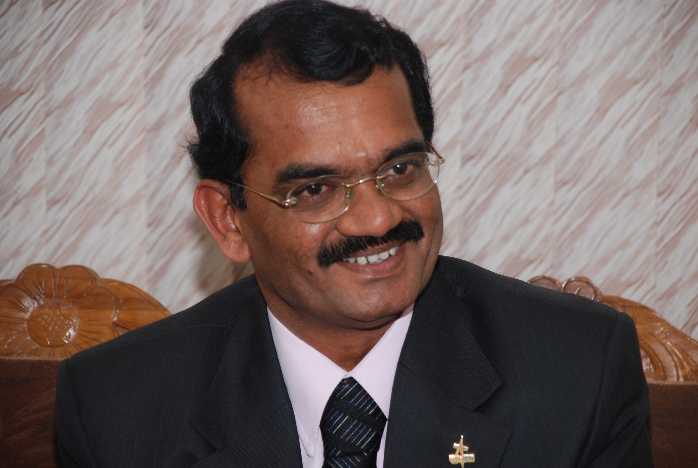

| Scientist Photo | Scientist Name | Scientist date of birth | Scientist invention | Achievments | native place |
|---|---|---|---|---|---|
 |
Nambi Narayan | 12 december 1941 | VIKAS ENGINE - LIQUID FUEL ROCKET TECHNOLOGY | PADMA BHUSHAN | Kanyakumari , Tamil Nadu |
 |
Veera Muthuvel | 22 october 1976 | "Chandrayan 3" 2 debris | not yet | Villupuram,Tamil Nadu |
 |
N Valarmathi | 31 july 1959 | RISAT-1 Radar imaging Satellite | Dr A.P.J ABUL KALAM Award,VOICE BEHIND THE CHANDRAYAN 3 COUNTDOWN | Ariyalur ,Tamil Nadu |
|  | Mylsamy Annadurai | 2 july 1958 | CHANDRAYAN -1 & Mangalyaan | Coimbatore,Tamil Nadu | Padamashri |